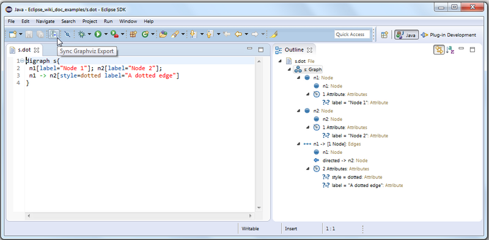
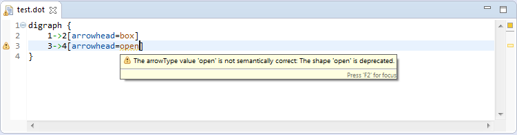
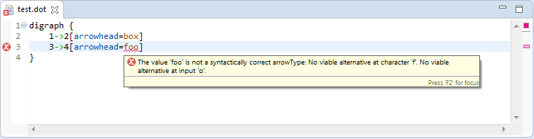
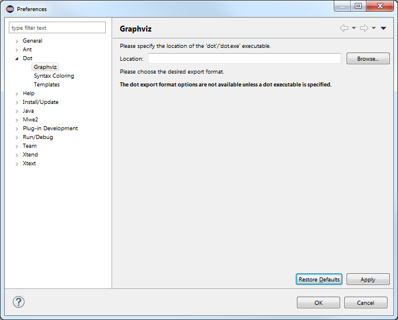
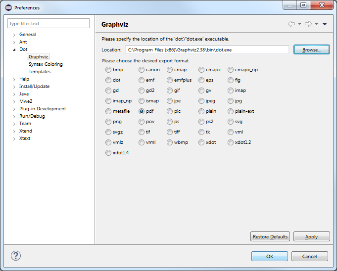
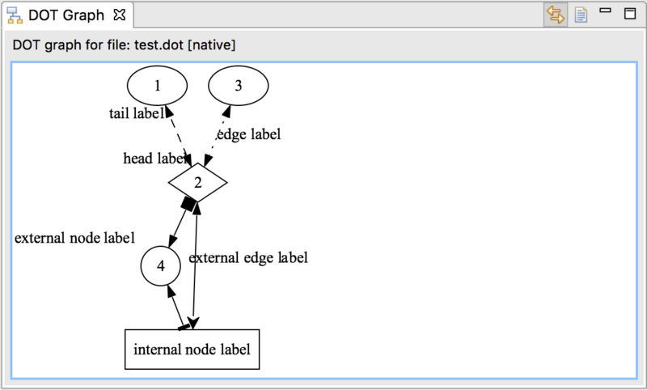
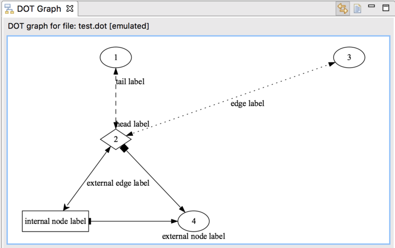
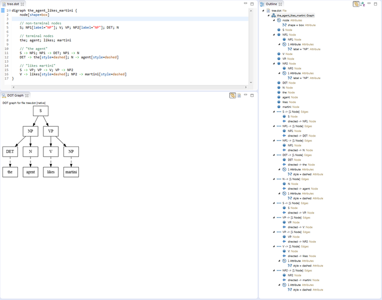
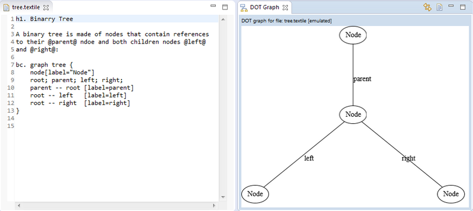

Note to non-wiki readers: This documentation is generated from the Eclipse wiki - if you have corrections or additions it would be awesome if you added them in the original wiki page .
The DOT component adds a DOT Editor and a DOT Graph View, as well as a Dot Preference Page and a Sync Graphviz Export toggle button to the UI. The DOT Editor can be used to edit Graphviz *.dot files, while the DOT Graph View allows to render them within Eclipse using Zest. The additional Sync Graphviz Export feature that is related to the DOT Editor (provided via a toggle button in the main toolbar) further allows to export them into different image formats (such as PDF, PNG, ...) using the Graphviz native executable, which can be configured on the Dot Preference Page.
In combination, the DOT Editor, DOT Graph View, and the Sync Graphviz Export feature, provide a Zest-based Graphviz DOT authoring environment. If a *.dot file or embedded DOT is edited, it can be visualized in the DOT Graph View, and/or can be exported as a PDF or image by using the Sync Graphviz Export. At the same time the DOT Graph View and Sync Graphviz Export provide a simple way to visualize *.dot file output of any kind of program, e.g. to visualize and debug internal data structures, results, etc: if a program running in Eclipse outputs any *.dot file in the workspace and the workspace is refreshed, the DOT Graph View and the export will be updated accordingly.
Please note that the *DOT Editor* and the [Zest](Zest)-based rendering of the *DOT Graph View* are currently still limited to support only a subset of the DOT language (see [#454629](https://bugs.eclipse.org/bugs/show_bug.cgi?id=454629), [#321775](https://bugs.eclipse.org/bugs/show_bug.cgi?id=321775), and [#441352](https://bugs.eclipse.org/bugs/show_bug.cgi?id=441352) for details).The DOT Editor is registered for *.dot files within the Eclipse Workbench UI. It is based on Xtext and thus provides support for syntax coloring, content assist, and integrated validation, as well as a customized Outline view integration.

The editor validates the currently edited .dot file on the fly and issues warnings/errors e.g in case of using deprecated/invalid dot language elements:
 
The editor also provides a Sync Graphviz Export option (toggle button in the toolbar; using the default Graphviz icon), which - if enabled - automatically stores an image file (.pdf, .png, ...) representing the saved state of the edited .dot file to the directory containing the .dot file, and opens it with the associated external image viewer, if one is available. In this example, the export looks like this:

The export relies on executing the native Graphviz dot binary, which can be configured under 'Windows -> Preferences -> Dot -> Graphviz' preference page. The following two screenshots represent the Graphviz preference page before/after the path to the dot executable is defined.
 
The DOT Graph View ('Window -> Show View -> Other... -> Visualization -> DOT Graph') can be used to visualize DOT graphs contained in *.dot files or embedded in other files, which are either explicitly loaded from the workspace, or synched with the .dot file currently being edited in the active DOT Editor.
For instance, consider a file with the .dot extension, containing the following DOT graph definition:
digraph��{
��������edge[dir="both"]
��������1;
��������2��[shape="diamond"];
��������3��
��������4��[shape="circle",��xlabel="external��node��label"];
��������5��[shape=box,��label="internal��node��label"];
��������1��->��2��[style=dashed,��headlabel="head��label",��taillabel="tail��label"]
��������3��->��2��[style=dotted,��label="edge��label"]
��������2��->��4��[arrowtail="box"]
��������4��->��5��[arrowhead="tee"]
��������2��->��5��[arrowhead��=��"open",��xlabel="external��edge��label"]
}Loading it in the view will result either in the 'native mode' representation (when the dot executable is configured, it is used for layouting), or in the 'emulated mode' representation (when the dot executable is not configured, the layouting is emulated by using a comparable Layout algorithm).
 
The view can be linked with the DOT Editor to visualize the saved state of the currently edited .dot file through the 'Link with DOT Editor' toggle button in the view's toolbar:

It can further be used to display embedded DOT in other files, e.g. in source code comments or in wiki markup:
